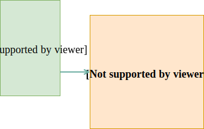
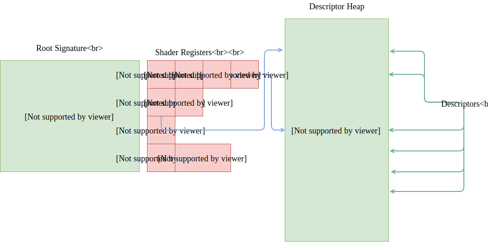
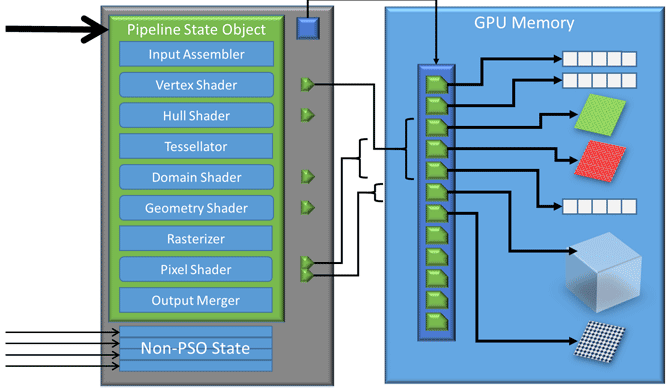
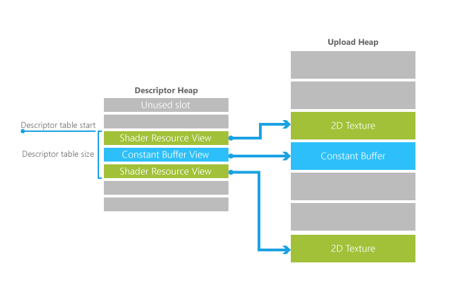
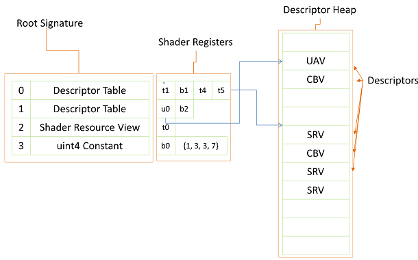

DirectML
DirectML 官方概述
Direct Machine Learning (DirectML) is a low-level API for machine learning (ML). Hardware-accelerated machine learning primitives (called operators) are the building blocks of DirectML. From those building blocks, you can develop such machine learning techniques as upscaling, anti-aliasing, and style transfer, to name but a few. Denoising and super-resolution, for example, allow you to achieve impressive raytraced effects with fewer rays per pixel.
Prerequisites
- DirectX 12-capable GPU drivers
- Windows 10 version 1903 or newer
- Windows 10 SDK version 1903
DirectML Resource
The key to resource binding in DirectX 12 are the concepts of a descriptor, descriptor tables, descriptor heaps, and a root signature. A descriptor is a small object that contains information about one resource.
typedef struct D3D12_SHADER_RESOURCE_VIEW_DESC { DXGI_FORMAT Format; D3D12_SRV_DIMENSION ViewDimension; union { D3D12_BUFFER_SRV Buffer; D3D12_TEX1D_SRV Texture1D; D3D12_TEX1D_ARRAY_SRV Texture1DArray; D3D12_TEX2D_SRV Texture2D; D3D12_TEX2D_ARRAY_SRV Texture2DArray; D3D12_TEX2DMS_SRV Texture2DMS; D3D12_TEX2DMS_ARRAY_SRV Texture2DMSArray; D3D12_TEX3D_SRV Texture3D; D3D12_TEXCUBE_SRV TextureCube; D3D12_TEXCUBE_ARRAY_SRV TextureCubeArray; D3D12_BUFFEREX_SRV BufferEx; }; } D3D12_SHADER_RESOURCE_VIEW_DESC; interface ID3D12Device { ... void CreateShaderResourceView ( _In_opt_ ID3D12Resource* pResource, _In_opt_ const D3D12_SHADER_RESOURCE_VIEW_DESC* pDesc, _In_ D3D12_CPU_DESCRIPTOR_HANDLE DestDescriptor); };
// create SRV D3D12_SHADER_RESOURCE_VIEW_DESC srvDesc; ZeroMemory(&srvDesc, sizeof(D3D12_SHADER_RESOURCE_VIEW_DESC)); srvDesc.Format = mTexture->Format; srvDesc.ViewDimension = D3D12_SRV_DIMENSION_TEXTURE2D; srvDesc.Texture2D.MipLevels = 1; mDevice->CreateShaderResourceView(mTexture.Get(), &srvDesc, mCbvSrvDescriptorHeap->GetCPUDescriptorHandleForHeapStart());
-
Descriptor： 描述 GPU 中资源类型、数据格式、存储地址。
常见的 Descriptor 类型:
- Constant buffer views (CBVs)
- Unordered access views (UAVs)
- Shader resource views (SRVs)
- Samplers
-
Descriptor Table：Descriptors 分类存入 Descriptor Table
- Descriptor Heap：Descriptors 存储在 Descriptor Heap 中
| Topic | Description |
|---|---|
| Descriptor |  |
| Descriptor Heap |  |
| Descriptor Table |   |
| Root Singature |  |
Descriptor 创建流程：
- GPU 创建 Descriptor Heap
- GPU 创建资源
- GPU 利用 1. 创建 Descriptor Table （可选）
- GPU 利用 1.2. 的信息，在 Descriptor Heap / Table 上创建 Descriptor